전자계산기조직응용기사 (2016-03-06 기출문제)
1과목: 전자계산기 프로그래밍
1. 정적 바인딩(static binding)에 해당하지 않는 것은?
- 언어구현시간
- 번역시간
- 링크시간
- 실행시간
(정답률: 57%)

2. 어셈블리에서 서브루틴을 호출하는 명령어는?
- LOOP
- JUM
- CALL
- GO
(정답률: 84%)
3. 다음 프로그래밍 언어 중 객체지향 언어가 아닌 것은?
- ada
- c++
- cobol
- smalltalk
(정답률: 75%)
4. C 언어에서 표준 입력인 키보드로부터 문자열을 지정된 양식에 따라 읽어 변수 값을 문자열로 변환시켜 주는 함수는 무엇인가?
- getchar()
- putchar()
- scanf()
- printf()
(정답률: 76%)
5. C 언어에서 다음 함수의 선언문에 관한 설명으로 옳은 것은?
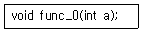
- 리턴되는 값이 반드시 정수형이어야 한다.
- 매개변수와 함수의 리턴형이 모두 정수형이다.
- 정수형 값을 전달받아 아무 값도 리턴하지 않는다.
- 정수형 값을 전달받아 임의의 형을 리턴한다.
(정답률: 67%)
6. 어셈블리언어의 번지지정방식에서 간접 메모리 지정방식이 아닌 것은?
- 상수 사용방식
- 베이스 레지스터 사용방식
- 레지스터 사용 지정방식
- 인덱스 레지스터 사용방식
(정답률: 64%)
7. C 언어에서 저장 클래스를 명시하지 않은 변수는 기본적으로 어떤 기억 클래스로 간주되는가?
- Auto
- Register
- Static
- Extern
(정답률: 74%)
8. C 언어에서 키보드로부터 하나의 문자를 입력받는 함수는?
- getchar()
- putchar()
- scanf()
- main()
(정답률: 78%)
9. 표준 C 언어에서 사용하는 데이터형의 명칭이 아닌 것은?
- character
- int
- float
- short
(정답률: 67%)
10. 어셈블리 언어에서 프로세서 제어용(processor control) 명령어가 아닌 것은?
- HLT
- LOCK
- WAIT
- POP
(정답률: 55%)
11. 예외처리(exception handling)에 대한 설명으로 바르지 않은 것은?
- 예외처리가 탐지되면 프로그램을 즉시 중단한 뒤 예외를 처리하고 다시 정상 실행한다.
- 예외를 처리하는 부분을 예외 처리기라고 한다.
- 예외상황이 탐지되면 프로그램 중단없이 적절한 행동을 취한 후 정상 실행한다.
- 프로그램 실행 중의 오버플로나 언더플로, 0으로 나누기 등으로 예외가 발생한다.
(정답률: 51%)
12. 럼바우(Rumbaugh)의 객체 모델링 기법에서 사용하는 세 가지 모델링이 아닌 것은?
- 객체 모델링
- 정적 모델링
- 동적 모델링
- 기능 모델링
(정답률: 73%)
13. C 언어에서 논리 곱(AND)을 나타내는 논리 연산자는?
- ∥
- &&
- !
- >
(정답률: 84%)
14. 객체 지향 프로그래밍의 개념으로 거리가 먼 것은?
- 클래스
- 메시지
- 메소드
- 프로시저
(정답률: 82%)
15. 다음 어셈블리언어 코드의 실행 겨로가로 도출되는 레지스터 al의 값은? (단, 모든 명령어와 상수, 레지스터 이름은 인텔 기반 PC의 어셈블리언어 체계를 따른다고 가정한다.)
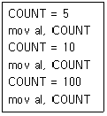
- 5
- 10
- 100
- 115
(정답률: 70%)
16. 객체지향 기법에서 객체에게 어떤 행위를 하도록 지시하는 명령을 무엇이라고 하는가?
- Method
- Package
- Message
- Module
(정답률: 73%)
17. 객체의 성질을 분해하고, 공통된 성질을 추출하여 슈퍼 클래스를 설정하는 일을 무엇이라 하는가?
- 추상화
- 메소드
- 정보은폐
- 메세지
(정답률: 75%)
18. 기억장소 할당을 프로그래머가 담당하는 로더는?
- linker and relocate loader
- linking loader
- absolute loader
- compile-and-go loader
(정답률: 50%)
19. Base register와 관련된 어셈블리 명령어는?
- START, END
- OPEN, CLOSE
- USING, DROP
- ENTRY, EXTERN
(정답률: 59%)
20. 다음은 EBNF의 기호에 대한 설명이다. 빈칸 (가), (나), (다)를 올바르게 채운 것은?
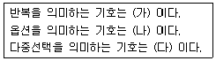
- 가={}, 나=(), 다=[]
- 가=(), 나=[], 다={}
- 가={}, 나=[], 다=()
- 가=(), 나={}, 다=[]
(정답률: 56%)
2과목: 자료구조 및 데이터통신
21. HDLC 프레임 구조에 포함되지 않는 것은?
- BCC
- GCS
- 주소부
- 제어부
(정답률: 46%)
22. 전송할 데이터가 있는 채널만 차례로 시간 슬롯을 이용하여 데이터와 함께 주소정보를 헤더로 붙여 전송하는 다중화 방식은?
- 주파수 분할 다중화
- 역 다중화
- 예약 시분할 다중화
- 통계적 시분할 다중화
(정답률: 68%)
23. OSI 7 Layer 물리계층의 특성에 대한 설명으로 틀린 것은?
- 전송 신호의 준위와 폭과 같은 전기적인 규격을 규정한다.
- 접속하기 위한 커넥터의 모양, 핀의 수와 같은 기계적인 규격을 규정한다.
- 물리적인 연결을 통해 데이터를 주고받기 위한 절차적인 규격을 규정한다.
- 어떤 전송 링크와 노드를 거쳐 패킷을 전달할 것인지의 경로 선택을 규정한다.
(정답률: 73%)
24. 통신 속도가 2400baud이고, 4상 위상변조를 하면 데이터의 전송속도(bps)는?
- 2400
- 4800
- 9600
- 19200
(정답률: 52%)
25. ARQ에서 오류 제어를 위해 수신한 데이터 프레임에 오류가 없음을 알리는 긍정 응답 메시지는?
- SOH
- ACK
- NAK
- EOT
(정답률: 73%)
26. OFDM에 대한 설명으로 적합하지 않은 것은?
- FFT(Fast Fourier Transform)에 의한 변복조 처리가 가능하다.
- 다중 경로 페이딩에 강하다.
- 반송파의 주파수 옵셋과 위상잡음에 민감하다.
- 사용자의 데이터 열에 따라 반송주파수를 변화한다.
(정답률: 35%)
27. 현재 많이 사용되고 있는 LAN 방식인 ″10BASE-T″에서 ″10″이 가리키는 의미는?
- 데이터 전송 속도가 10Mbps
- 케이블의 굵기가 10밀리미터
- 접속할 수 있는 단말기의 수가 10대
- 배선할 수 있는 케이블의 길이가 10미터
(정답률: 74%)
28. TCP 프로토콜의 세그먼트 구조에 포함되지 않는 것은?
- Source Port Address
- Sequence Number
- Time to live
- Window size
(정답률: 50%)
29. IP 주소가 192.110.121.32이고 서브넷마스크가 255.255.255.0 이라면 네트워크 주소는?
- 128.0.0.0
- 128.110.0.0
- 128.110.121.0
- 128.110.121.32
(정답률: 59%)
30. 무선 LAN에서 사용되는 매체접근방식(MAC)은?
- ALOHA
- token passing
- CSMA/CD
- CSMA/CA
(정답률: 47%)
31. 데이터의 신속한 탐색을 위해 사용되는 해싱(hashing) 함수의 기법이 아닌 것은?
- 개방주소법
- 중간제곱법
- 나눗셈법(제산법)
- 숫자분석법
(정답률: 49%)
32. 레코드가 1000개 정도일 때 다음 중 최악의 경우에서도 탐색 시간이 가장 빠른 것은?
- 순차 탐색(sequential search)
- 이진 탐색(binary search)
- 피보나치 탐색(fibonacci search)
- 보간 탐색(interpolation search)
(정답률: 60%)
33. 스택에 대한 설명으로 옳은 내용을 모두 나열한 것은?
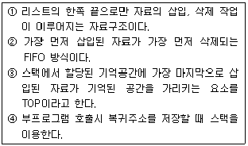
- ①, ②
- ①, ②, ③
- ①, ②, ④
- ①, ③, ④
(정답률: 72%)
34. 데이터베이스에 저장된 데이터 값과 그것이 표현하는 현실 세계의 실제 값이 일치하는 정확성을 의미하는 것은?
- 상호운용성
- 가용성
- 무결성
- 참조성
(정답률: 70%)
35. 다음 자료에서 ″215″를 찾기 위해 이진 탐색을 이용할 경우 비교해야 될 횟수는?
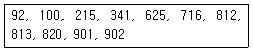
- 2
- 3
- 4
- 5
(정답률: 61%)
36. 선형리스트 (a1, a2, ………, an)를 1차원 배열에 삽입 또는 삭제하는 동작을 실행할 때 발생할 수 있는 문제가 아닌 것은?
- data movement
- random access
- overflow
- underflow
(정답률: 64%)
37. 다음 자료 구조 중 선형 구조가 아닌 것은?
- 연결리스트
- 그래프
- 스택
- 큐
(정답률: 73%)
38. Infix 표기의 식 ″(A / (B∧ C))*D + E″를 Postfix 방법으로 바르게 표현한 것은?
- +*/A∧BCDE
- ABC∧/D*E+
- E+D*C∧B/A
- AB∧/CD*E+
(정답률: 68%)
39. 주어진 파일에서 인접한 2개의 레코드 키 값을 비교하여 그 크기에 따라 레코드 위치를 서로 교환하는 정렬 방식은?
- 선택 정렬
- 삽입 정렬
- 퀵 정렬
- 버블 정렬
(정답률: 76%)
40. 데이터베이스의 3단계 스키마에 해당하지 않는 것은?
- 내부 스키마
- 외부 스키마
- 관계 스키마
- 개념 스키마
(정답률: 79%)
3과목: 전자계산기구조
41. 다른 컴퓨터를 이용하여 어셈블리 언어의 프로그램을 이식(porting)하고자 하는 마이크로프로세서의 기계어로 번역하는 프로그램은?
- 크로스 링커
- 크로스 어셈블러
- 매크로 어셈블러
- 매크로 컴파일러
(정답률: 64%)
42. 입ㆍ출력 제어장치의 종류가 아닌 것은?
- DMA
- 채널
- 데이터 버스
- 입출력 프로세서
(정답률: 53%)
43. 2개 이상의 프로그램을 주기억장치에 기억시키고 CPU를 번갈아 사용하면서 처리하여 컴퓨터 시스템 자원 활용률을 극대화하기 위한 프로그래밍 기법은?
- 분산처리 프로그래밍
- 일괄처리 프로그래밍
- 멀티 프로그래밍
- 리얼타임 프로그래밍
(정답률: 52%)
44. 명령을 수행하기 위해 CPU 내의 레지스터와 플래그의 상태 변환을 일으키는 작업은 무엇인가?
- Common operation
- Axis operation
- Micro operation
- Count operation
(정답률: 57%)
45. 하나의 명령을 처리하는 과정으로 옳게 나열한 것은?
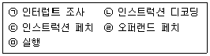
- ㉢→㉡→㉣→㉤→㉠
- ㉠→㉢→㉡→㉤→㉣
- ㉡→㉢→㉣→㉤→㉠
- ㉣→㉢→㉡→㉤→㉠
(정답률: 40%)
46. 부동 소수점인 두 수의 나눗셈을 위한 순서를 바르게 나열한 것은?
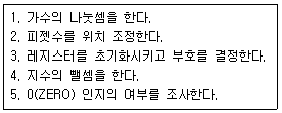
- 3-2-4-1-5
- 5-3-2-1-4
- 3-2-1-4-5
- 5-3-2-4-1
(정답률: 48%)
47. I/O operation과 관계가 없는 것은?
- channel
- handshaking
- interrupt
- emulation
(정답률: 55%)
48. 동기 고정식 마이크로오퍼레이션(MO) 제어의 특징을 설명한 것으로 틀린 것은?
- 제어장치의 구현이 간단하다.
- 중앙처리장치의 시간 이용이 비효율적이다.
- 여러 종류의 MO 수행시 CPU사이클 타임이 실제적인 오퍼레이션 시간보다 길다.
- MO이 끝나고 다음 오퍼레이션이 수행될 때까지 시간지연이 있게 되어 CPU 처리 속도가 느려진다.
(정답률: 38%)
49. 여러 개의 LAB(Logic Array Block)과 연결선인 PIA(Programmable Interconnection Array)로 구성되며, 빠른 성능이나 정확한 타이밍의 예측이 필요로 하는 곳에 사용되는 것은?
- PLA(Programmable Logic Array)
- PAL(Programmable Array Logic)
- FPGA(Field Programmable Gate Array)
- CPLD(Complex Programmable Logic Device)
(정답률: 44%)
50. 16진수 80H가 들어 있는 8비트 레지스터에서 0, 2, 4번째 비트를 세트(set)하려면 얼마의 값을 OR 연산하여야 하는가?
- 10H
- 11H
- 12H
- 15H
(정답률: 35%)
51. 인터럽트 벡터에서 필수적인 것은?
- 분기번지
- 메모리
- 제어규칙
- 누산기
(정답률: 45%)
52. 8비트로 된 레지스터에서 2의 보수로 숫자를 표시한다면 이 레지스터로 표시할 수 있는 10진수의 범위는? (단, 첫째 비트는 부호 비트로 0, 1일 때 각각 양(+), 음(-)을 나타낸다고 가정한다.)
- -256 ~ +256
- -128 ~ +127
- -128 ~ -128
- -256 ~ +127
(정답률: 58%)
53. 명령어 처리를 위한 마이크로 사이클이 아닌 것은?
- 인출(Fetch)
- 간접(Indirect)
- 실행(Execute)
- 메모리(Memory)
(정답률: 56%)
54. 논리 마이크로 연산에 있어서 레지스터 A와 B의 값이 다음과 같이 주어졌을 때 selective-set 연산을 수행하면 어떻게 되는가? (단, A는 프로세서 레지스터이고, B는 논리 오퍼랜드이다.)
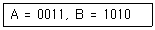
- 1100
- 1011
- 0011
- 1010
(정답률: 59%)
55. 그림과 같은 메모리 IC에 필요한 핀(pin)의 수는?
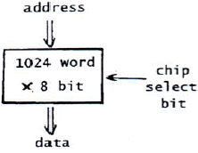
- 17
- 18
- 19
- 20
(정답률: 39%)
56. 주소 명령어 형식에 관한 설명으로 틀린 것은?
- 0-주소 명령어 형식은 PUSH/POP 연산을 사용한다.
- 1-주소 명령어 형식은 누산기를 사용한다.
- 2-주소 명령어 형식은 MOVE 명령이 필요하다.
- 3-주소 명령어 형식은 내용이 연산 결과 저장으로 소멸된다.
(정답률: 60%)
57. 병렬컴퓨터에서 버스의 클럭 주기가 80ns이고, 데이터 버스의 폭이 8byte라고 할 때 , 전송할 수 있는 데이터의 양은?
- 1 Mbyte/sec
- 10 Mbyte/sec
- 100 Mbyte/sec
- 1000 Mbyte/sec
(정답률: 43%)
58. 상대 주소모드를 사용하는 컴퓨터에서 분기 명령어가 저장된 기억장치 주소가 256AH일 때, 명령어에 지정된 변위 값이 -75H인 경우 분기되는 주소의 위치는? (단, 분기명령어의 길이는 3바이트이다.)
- 24F2H 번지
- 24F5H 번지
- 24F8H 번지
- 256DH 번지
(정답률: 39%)
59. 두 데이터의 비교(Compare)를 위한 논리연산은?
- XOR 연산
- AND 연산
- OR 연산
- NOT 연산
(정답률: 63%)
60. 그림의 Decoder에서 Y0=0, Y1=1이 입력되었을 때 “1”을 출력하는 단자는?
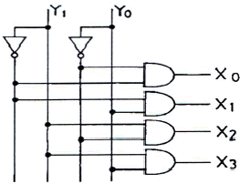
- X0
- X1
- X2
- X3
(정답률: 52%)
4과목: 운영체제
61. 프로세스의 상태정보를 갖고 있는 PCB(Process Control Block)의 내용이 아닌 것은?
- 프로세스 식별정보
- 프로세스 제어정보
- 프로세서(CPU) 상태정보
- 프로세스 생성정보
(정답률: 35%)
62. 다음 표는 고정 분할에서의 기억 장치 Fragmentation 현상을 보이고 있다. External Fragmentation은 총 얼마인가?
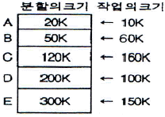
- 480K
- 430K
- 260K
- 170K
(정답률: 51%)
63. 디스크 스케줄링의 목적과 거리가 먼 것은?
- 처리율 극대화
- 평균 반응시간의 단축
- 응답시간의 최소화
- 디스크 공간 확보
(정답률: 57%)
64. 로더의 종류 중 별도의 로더 없이 언어번역 프로그램이 로더의 기능까지 수행하는 방식은?
- Absolute Loader
- Direct Linking Loader
- Dynamic Loader
- Compile and Go Loader
(정답률: 35%)
65. 데이터의 비밀성을 보장하는데 사용될 수 있는 암호화 알고리즘이 아닌 것은?
- DES(Data Encryption Standard)
- RSA(Rivest Shamir Adleman)
- Reed-Solomon code
- FEAL(Fast Encryption Algorithm)
(정답률: 42%)
66. 인터럽트의 종류 중 컴퓨터 자체 내의 기계적인 장애나 오류로 인하여 발생하는 것은?
- 입/출력 인터럽트
- 외부 인터럽트
- 기계 검사 인터럽트
- 프로그램 검사 인터럽트
(정답률: 43%)
67. 시스템 타이머에서 일정한 시간이 만료된 경우나 오퍼레이터가 콘솔상의 인터럽트 키를 입력한 경우 발생하는 인터럽트는?
- 프로그램 검사 인터럽트
- SVC 인터럽트
- 입ㆍ출력 인터럽트
- 외부 인터럽트
(정답률: 42%)
68. UNIX 파일 시스템의 블록구조에 포함되지 않는 것은?
- USER BLOCK
- BOOT BLOCK
- INODE LIST
- SUPER BLOCK
(정답률: 42%)
69. 모니터에 대한 설명으로 옳지 않은 것은?
- 모니터의 경계에서 상호배제가 시행된다.
- 자료추상화와 정보은폐 기법을 기초로 한다.
- 공유 데이터와 이 데이터를 처리하는 프로시저로 구성된다.
- 모니터 외부에서도 모니터 내의 데이터를 직접 액세스 할 수 있다.
(정답률: 57%)
70. 캐싱(Caching)과 원격서비스의 비교에 대한 설명 중 옳지 않은 것은?
- 많은 원격 접근들은 캐싱이 사용될 때 지역 캐쉬에 의해서 효율적으로 처리될 수 있다.
- 캐쉬-일관성 문제는 캐싱의 가장 큰 결점이다.
- 모든 원격 접근은 원격-서비스 방법이 사용될 때 네트워크를 통해서만 처리된다.
- 캐쉬-일관성 문제는 쓰기 접근 빈도가 많은 접근형태에서 캐싱이 우수하다.
(정답률: 31%)
71. 디렉토리 구조 중 가장 간단한 형태로 같은 디렉토리에 시스템에 보관된 모든 파일 정보를 포함하는 구조는?
- 일단계 디렉토리
- 트리 구조 디렉토리
- 이단계 디렉토리
- 비주기 디렉토리
(정답률: 54%)
72. 세마포어를 사용해서 상호배제를 구현할 수 있다. 세마포어를 2로 초기화하였다면, 그 의미는 무엇인가?
- 임계구역에 2개의 프로세스가 들어갈 수 있다.
- 두 개의 임계구역이 존재한다.
- 모든 세마포어의 기본 값은 2이다.
- 생산자/소비자를 구현하는 세마포어의 초기 값은 2이다.
(정답률: 36%)
73. 쉘(shell)의 기능이 아닌 것은?
- 자체의 내장 명령어 제공
- 파이프라인 기능
- 주기억장치에 상주
- 입출력 방향지정
(정답률: 36%)
74. 적응기법(Adaptive Mechanism)이란 시스템이 유동적인 상태 변화에 적절히 반응하도록 하는 기법을 의미한다. 다음 스케줄링 기법 중 적응 기법의 개념을 적용하고 있는 것은?
- FIFO
- HRN
- MFQ
- RR
(정답률: 33%)
75. 현재 헤드의 위치가 50에 있고 트랙 0번 방향으로 이동하며, 요청 대기 열에는 아래와 같은 순서로 들어 있다고 가정할 때 SSTF(Shortest Seek Time First) 스케줄링 알로리즘에 의한 헤드의 총 이동거리는 얼마인가?
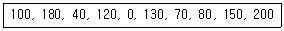
- 790
- 380
- 370
- 250
(정답률: 37%)
76. 10K 프로그램이 할당될 때 주기억장치 관리기법인 First-fit 방법을 적용할 경우 해당하는 영역은?
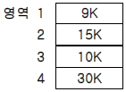
- 영역 1
- 영역 2
- 영역 3
- 영역 4
(정답률: 55%)
77. 분산시스템의 위상에 따른 분류 방식 중 다음 설명에 해당하는 방식은?
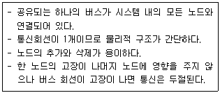
- Ring Connected
- Multiaccess Bus Connected
- Partially Connected
- Fully Connected
(정답률: 51%)
78. 분산처리시스템에 대한 설명과 관련 없는 것은?
- 분산된 노드들은 통신 네트워크를 이용하여 메시지를 주고받음으로써 정보를 교환한다.
- 사용자에게 동적으로 할당할 수 있는 일반적인 자원들이 각 노드에 분산되어 있다.
- 시스템 전체의 정책을 결정하는 어떤 통합적인 제어 기능은 필요하지 않다.
- 사용자는 특정 자원의 물리적 위치를 알지 못하여도 사용할 수 있다.
(정답률: 53%)
79. UNIX에서 파일의 사용 허가를 정하는 명령은?
- cp
- chmod
- cat
- ls
(정답률: 60%)
80. 다음 암호화 기법에 대한 설명으로 틀린 것은?
- DES는 비대칭형 암호화 기법이다.
- RSA는 공개키/비밀키 암호화 기법이다.
- 디지털 서명은 비대칭형 암호 알고리즘을 사용한다.
- DES 알로리즘에서 키 관리가 매우 중요하다.
(정답률: 35%)
5과목: 마이크로 전자계산기
81. 캐시 메모리에 대한 설명 중 틀린 것은?
- cache memory는 모든 처리가 하드웨어로 행해진다.
- cache memory는 CPU와 주기억장치 사이의 속도차이를 완화하기 위한 완충장치이다.
- cache memory와 주기억장치는 페이지 단위로 정보를 교환한다.
- cache memory는 번지공간(address space)이 메모리 공간(memory space) 보다 크다.
(정답률: 46%)
82. 병렬 입ㆍ출력 인터페이스에서 데이터가 입ㆍ출력되었음을 알 수 있는 제어에 필요한 신호는 어느 것인가?
- reset 신호
- strobe 신호
- ALE 신호
- latch 신호
(정답률: 35%)
83. 그림과 같은 방식으로 디스플레이에 문자를 표시하기 위하여 사용하는 ROM의 역할은?
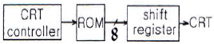
- 문자 패턴을 기억한다.
- ASCII code를 기억한다.
- 제어 프로그램을 기억한다.
- 화면의 커서(Cursor) 위치를 기억한다.
(정답률: 45%)
84. 동기형 계수기로 사용할 수 없는 것은?
- 링 카운터
- BCD 카운터
- 2진 카운터
- 2진 업다운 카운터
(정답률: 49%)
85. 어느 프로그램 중 0123번지에 CALL A 명령이 있다. 이 CALL A를 수행한 후 stack에 기억된 값은?
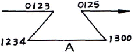
- 0123
- 0125
- 1234
- 1300
(정답률: 52%)
86. 입출력장치의 비동기식 제어방식에서 가장 많이 사용되는 방식은?
- open loop 방식
- closed loop 방식
- handshake 방식
- inter lock 방식
(정답률: 54%)
87. 비동기식(Asynchronous) 직렬(Serial) 입출력 인터페이스를 올바르게 설명한 것은?
- 데이터를 block으로 묶어서 전송하는 방식이다.
- 변복조장치(MODEM)를 사용한 장거리 데이터 전송은 불가능하다.
- 단위 데이터의 전후에 스타트(start) 신호와 스톱(stop) 신호가 필요하다.
- 고속 데이터 전송이 필요한 입출력 장치의 인터페이스에 적합하다.
(정답률: 58%)
88. 주소 선(address line)이 16개인 CPU의 직접 액세스가 가능한 메모리 공간은 몇 Kbyte인가?
- 32
- 64
- 128
- 256
(정답률: 59%)
89. 인터럽트(Interrupt)가 발생했을 경우 이를 처리하기 전에 그 내용을 기억시킬 필요가 없는 것은?
- Accumulator
- State Register
- Program Counter
- Instruction Register
(정답률: 17%)
90. 마이크로컴퓨터시스템을 개발하는데 사용하는 디버거로 intel사의 등록상표인 것은?
- JTAG
- socket
- In-Circuit Emulator
- PowerVT Terminal Emulator
(정답률: 47%)
91. 함수연산 인스트럭션을 나타낸 것은?
- 자료전달 인스트럭션
- 제어 인스트럭션
- 입출력 인스트럭션
- 시프트 인스트럭션
(정답률: 42%)
92. 우선순위 인터럽트 체제에서 인터럽트 취급 루틴(interrupt processing routine)을 수행하고 있을 때 DMA 요청이 있다면 컴퓨터는 어떤 처리를 하는가?
- 인터럽트 루틴을 처리한 후 DMA 요청을 받아들인다.
- 인터럽트 처리를 끝낸 후 main 프로그램으로 제어를 옮긴 후 DMA 요청을 받아들인다.
- DMA 요청을 곧바로 받아들인다.
- 인터럽트 우선순위와 DMA 순위를 비교한 후 우선처리 순위에 따라 처리한다.
(정답률: 39%)
93. 스택에 관한 설명으로 틀린 것은?
- PUSH/POP 명령으로 수행된다.
- 서브루틴 방식에 사용된다.
- 인터럽트 방식에 사용된다.
- FIFO형태로 동작한다.
(정답률: 69%)
94. 마이크로컴퓨터 시스템과 외부회로 사이의 데이터 전달 입출력(I/O) 방식이 아닌 것은?
- programmed I/O
- interrupt I/O
- DMA(direct memory access)
- paged I/O
(정답률: 53%)
95. 펌웨어(firmware) 메모리에 대한 설명 중 틀린 것은?
- ROM 속에 선택된 프로그램이나 명령을 영원히 내장하는 것을 펌웨어라 한다.
- 일반적으로 주기억 장치보다는 가격도 저렴하고 용량도 크며, 하드웨어의 기능을 펌웨어로 변경하면 속도가 빨라진다.
- 반도체 메모리에 명령어가 영원히 저장되기 때문에 고체 상태 소프트웨어라고도 불린다.
- ROM으로 된 펌웨어는 전원이 차단되어도 내용이 지워지지 않으므로 하드웨어와 소프트웨어의 기능을 대신할 수 있다.
(정답률: 46%)
96. 인터럽트 요구 신호는 마이크로컴퓨터의 어느 부분과 관련이 있는가?
- 주변 버스(peripheral bus)
- 제어 버스(control bus)
- 주소 버스(address bus)
- 데이터 버스(data bus)
(정답률: 69%)
97. 입ㆍ출력 포트의 선택 장소가 메모리 셀 장소와 동일하며 같은 제어선을 갖는 디코더로서 메모리 또는 입ㆍ출력 포트를 선택하는 방식은?
- Isolated I/O
- Memory Mapped I/O
- 동기식 I/O
- 비동기식 I/O
(정답률: 58%)
98. 입출력 인터페이스(I/O interface) 구성에 꼭 필요한 부분이라고 볼 수 없는 것은?
- 주소 버스
- 데이터 버스
- 제어 버스
- 명령어 디코더
(정답률: 59%)
99. 범용 직렬 통신 장치인 8251에 대한 설명으로 틀린 것은?
- 양방향 통신을 하기 위하여 더블 버퍼로 구성되어 있다.
- 전송 버퍼, 수신 버퍼가 있다.
- 동기식 전송만 가능하다.
- 전송 속도는 DC에서 최대 64Kbps까지 가능하다.
(정답률: 63%)
100. DMA(Direct Memory Accdess)방식에 대한 설명 중 올바른 것은?
- 메모리의 내용이 누산기(accumulator)만을 거쳐서 전송된다.
- CPU가 데이터 전송 과정을 직접 제어한다.
- 많은 양의 데이터를 고속으로 전송하는 데는 적합하지 않다.
- DMA 제어를 위한 별도의 하드웨어가 필요하다.
(정답률: 39%)